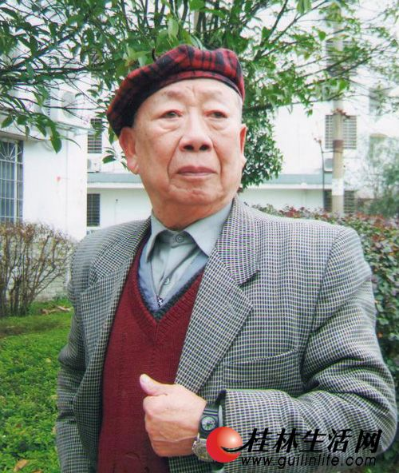
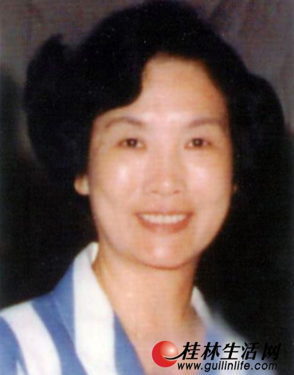

桂剧名伶
演员是戏曲活动的中心，他们处在与观众交流的最前沿。演员名家辈出是戏曲繁荣的最为重要的标志。解放后，桂剧推陈出新享誉全国，涌现出了尹羲、秦彩霞、筱兰魁、罗桂霞、苏飞麟、刘民凤、陈婉仙、章凤仙、苏芝仙、林瑞仙、王琼仙、梅兰香、龙民介、唐明刚、蒋明侠、阮冲、曾素华、黎久福、翁桂斌、阳桂峰、阳桂秋、秦桂娟、周桂童、蒋燕麟、马艺松、欧阳艺莲、蒋文萱等一批杰出的桂剧表演艺术家。

|

|
|
尹羲（一九二0至二00四），艺名小金凤，九岁拜师学艺，十岁登台演出。抗战时期，得到戏剧大师欧阳予倩的精心栽培，在桂剧舞台上塑造了一个个形神兼备，光彩照人的艺术形象……【详细】 |
秦彩霞，艺名秦蝉仙，著名桂剧表演艺术家、国家一级演员。师从桂剧名角赵元清、刘安百、刘万春、刘长春，她嗓音圆润委婉、做工细腻传神，一九五六年被授予"全国先进工作者"…… 【详细】 |
|  |  |
|
筱兰魁（原名周明亮），国家一级演员。曾任桂林市桂剧改进一团、桂林市青年桂剧团、桂林市桂剧团团长、桂林戏曲学校校长。出生梨园世家，六岁进入光明桂剧社，酷爱戏曲艺术…… 【详细】 |
罗桂霞，国家一级演员。曾担任桂林市文化局副局长、桂林市桂剧团团长、桂林市实验桂剧团团长。擅演青衣、花旦、反串小生，文武兼能，尤其以唱腔甜、美、脆、亮而著称…… 【详细】 |

|
|
她，生长在山水甲天下的桂林。师从于桂剧名旦尹羲、秦彩霞。曾主演《瑶妃传奇》、《风采壮妹》荣获国家"文华表演奖"她就是桂林市桂剧团团长、国家一级演员——张树萍"……【详细】 |
曾定国，国家一级演员，自治区劳动模范、广西人大代表、广西剧协副主席、桂林市剧协主席、桂林市彩调团团长。师从桂剧名角王盈秋，他嗓音高亢、苍劲有力，代表作《大儒还乡》……【详细】 |
制作人： 软件开发191班 贺志飞 学号:5720191408